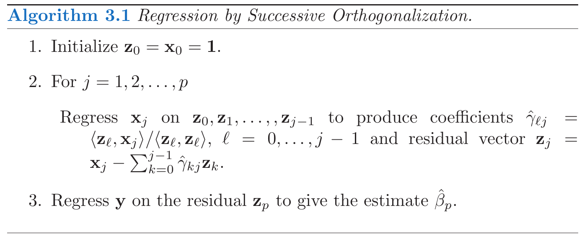

layout: true <div class="my-header"> <p class="align_left"><img src="images/yonsei_logo.png" style="height: 30px;"/></p> <p class="align_right"><b>Linear Regression 2</b></p> </div> <div class="my-footer"> <p class="align_right"><b>2021.04.30 ML Study</b></p> <p class="align_left"><b>Tae Geun Kim</b></p> </div> --- class: center, middle # Linear Regression <h4 style="color:brown">Part II: Implementations</h4> <h3 style="color: darkblue">Tae Geun Kim</h3> --- ## Table of Contents -- * F-test -- * Implementation -- * Gauss-Markov Theorem -- * Regression by Successive Orthogonalization --- class: center, middle # F-test --- ### F-test * To test validity of one feature -- `\(\rightarrow\)` **t-test** or **z-test** -- * To test which model is more valid -- `\(\rightarrow\)` **F-test** -- * Suppose there are two models : `\(\small p=p_0,~p=p_1\quad(p_0 < p_1)\)` -- Then the null hypothesis & alternative hypothesis are : $$\small H\_0: ~\beta\_{p\_0+1} = \beta\_{p\_0 + 2} = \cdots = \beta\_{p\_1} = 0,\quad H\_1: \text{ Not } H\_0$$ -- Then the F statistics is : $$F = \frac{(\text{RSS}\_0 - \text{RSS}\_1) / (p\_1 - p_0)}{\text{RSS}\_1 / (N-p\_1 - 1)}$$ --- ### F-test <div class="animated-border-quote"> <blockquote> <p> $$\small \begin{align} \text{RSS}_0 - \text{RSS}_1 &= \sum_{i=1}^N \{ (y_i - \hat{y}_i^{(0)})^2 - (y_i-\hat{y}_i^{(1)})^2\} \\ &= \mathbf{y}^T (\mathbf{I} - \mathbf{H}^{(0)} - \mathbf{I} + \mathbf{H}^{(1)}) \mathbf{y} \\ &= \mathbf{y}^T (\mathbf{H}^{(1)} - \mathbf{H}^{(0)}) \mathbf{y} \end{align}$$ Since, \(\small \mathbf{H}^{(1)} - \mathbf{H}^{(0)}\) is also symmetric & idempotent, the degree of freedom is : $$\small \text{tr}(\mathbf{H}^{(0)} - \mathbf{H}^{(1)}) = p_1+1 - (p_0+1) = p_1 - p_0$$ \(\small \Rightarrow (\text{RSS}_0 - \text{RSS}_1) / (p_1 - p_0) \sim \sigma^2 \chi^2_{p_1-p_0}\), \(\small \,\text{RSS}_1 / ({N-p_1-1}) \sim \sigma^2 \chi^2_{N-p_1-1}\) <br/> <br/> \(\small \displaystyle \Rightarrow \frac{(\text{RSS}_0 - \text{RSS}_1) / (p_1 - p_0)}{\text{RSS}_1 / (N-p_1 - 1)} \,\sim\, \frac{\sigma^2\chi^2_{p_1 - p_0}}{\sigma^2 \chi^2_{N-p_1-1}} \,\sim\, F_{p_1-p_0,\,N-p_1-1}\) </p> </blockquote> </div> --- class: center, middle # Implementation --- ### Raw Code for Estimation ```python import numpy as np import statsmodels.api as sm def find_beta_hat(X, y): # X should be np.matrix return np.linalg.pinv(X) * y def find_y_hat(X, beta, y): return X * beta # Example np.random.seed(42) x = np.arange(1, 5, 0.1) err = np.random.randn(len(x)) y = 2 * x + 3 + err X = np.matrix(x).T X = sm.add_constant(X) Y = np.matrix(y).T beta = find_beta_hat(X, Y) y_hat = find_y_hat(X, beta, Y) ``` --- ### Raw Code for test ```python def find_sigma_hat(y, y_hat, p): return np.sum((y - y_hat)**2) / (len(y) - p - 1) def calc_t_score(beta, X, sigma): v = np.sqrt(np.diag(np.linalg.inv(X.T * X))) return (beta / v) / np.sqrt(sigma) def calc_rss(y, y_hat): return np.sum((y - y_hat)**2) def calc_F_score(rss_0, p_0, rss_1, p_1, N): return ((rss_0 - rss_1) / (p_1 - p_0)) / (rss_1 / (N - p_1 - 1)) def calc_p_value(d, z): if z >= 0: return (1 - d.cdf(z)) * 2 else: return 1 ``` -- * But it's too dirty... -- `\(\,\Rightarrow\,\)` Use OOP --- ### OOP Implementations of OLS * View [Code](https://github.com/Axect/ESL_Study/blob/master/chap3/python/ols.py) --- class: center, middle # Gauss-Markov Theorem --- ### Gauss-Markov Theorem We focus on estimation of any linear combination of the parameters : `\(\theta = a^T \beta\)` -- * OLS estimator of `\(\small \theta\)` : $$\small \hat{\theta} = a^T\hat{\beta} = a^T(\mathbf{X}^T\mathbf{X})^{-1}\mathbf{X}^T \mathbf{y}$$ -- * Any other linear unbiased estimator : $$\small \tilde{\theta} = \mathbf{c}^T \mathbf{y}$$ -- * **Gauss-Markov Theorem** : <div class="animated-border-quote"> <blockquote> <p> For any linear unbiased estimator \(\small \tilde{\theta} = \mathbf{c}^T\mathbf{y}\), that is, \(\small E(\mathbf{c}^T\mathbf{y}) = a^T \beta\), then $$\text{Var}(a^T\hat{\beta}) \leq \text{Var}(\mathbf{c}^T \mathbf{y})$$ </p> </blockquote> </div> --- ### Gauss-Markov Theorem (Proof) <div class="animated-border-quote"> <blockquote> <p> Since \(\small \mathbf{c}^T\) is linear, we can write \(\small \mathbf{c}^T = a^T(\mathbf{X}^T\mathbf{X})^{-1}\mathbf{X}^T + \mathbf{d}^T\) for some constant \(\small \mathbf{d}^T\). $$\small \begin{align} E(\mathbf{c}^T\mathbf{y}) &= \mathbf{E} \left\{(a^T(\mathbf{X}^T\mathbf{X})^{-1} \mathbf{X}^T + \mathbf{d}^T ) \mathbf{y}\right\} \\ &= (a^T \mathbf{X}^\dagger + \mathbf{d}^T) E(\mathbf{y}) \\ &= a^T \mathbf{X}^\dagger\mathbf{X} \beta + \mathbf{d}^T\mathbf{X}\mathbf{\beta} = a^T \beta + \mathbf{d}^T \mathbf{X}\beta \end{align}$$ Because of unbiased-ness, \(\small \mathbf{d}^T \mathbf{X} = 0\). Then $$\small \begin{align} \text{Var}(\mathbf{c}^T\mathbf{y}) &= \mathbf{c}^T \text{Var}(\mathbf{y})\mathbf{c} = \sigma^2 \mathbf{c}^T\mathbf{c} \\ &= \sigma^2 (a^T(\mathbf{X}^T\mathbf{X})^{-1} \mathbf{X}^T + \mathbf{d}^T)(\mathbf{X}(\mathbf{X}^T\mathbf{X})^{-1} a + \mathbf{d}) \\ &= \sigma^2 \left\{ a^T(\mathbf{X}^T\mathbf{X})^{-1}a + \mathbf{d}^T\mathbf{d} \right\} \\ &= a^T\left\{\sigma^2(\mathbf{X}^T\mathbf{X})^{-1} \right\}a + \sigma^2 \mathbf{d}^T\mathbf{d} \\ &= \text{Var}(\hat{\theta}) + \sigma^2 \mathbf{d}^T\mathbf{d} \geq \text{Var}(\hat{\theta}) \end{align}$$ </p> </blockquote> </div> --- ### Mean Squared Error Now, consider the mean squared error of an estimator `\(\small \tilde{\theta}\)` in estimating `\(\small \theta\)`: $$\begin{align} \small \text{MSE}(\tilde{\theta}) &= E(\tilde{\theta} - \theta)^2 \\\\ &= \text{Var}(\tilde{\theta}) + (E(\tilde{\theta}) - \theta)^2 \end{align}$$ -- * The first term is the variance * The second term is the squared bias -- * The Gauss-Markov theorem states the OLS estimator has the smallest `\(\small \text{MSE}\)`. -- And the expected prediction error for one input `\(\small x_0\)`: $$\begin{align} E(Y_0 - \tilde{f}(x\_0))^2 &= \sigma^2 + E(x\_0^T \tilde{\beta} - f(x\_0))^2 \\\\ &= \sigma^2 + \text{MSE}(\tilde{f}(x\_0)) \end{align}$$ -- Therefore, OLS estimator is the **BLUE** (Best Linear Unbiased Estimator). --- class: center, middle # Regression by Successive Orthogonalization --- ### Multiple, Univariate, Simple * **Multiple** linear regression : `\(\small p > 1\)` -- * **Univariate** linear regression : `\(\small p = 1\)` -- * **Simple** linear regression : `\(\small p = 1,~\beta \in \mathbb{R}\)` -- Now, we derive alternative approach to multiple linear regression from simple univariate linear regression. -- * Suppose a univariate model with **no intercept** : `\(\small Y = X \beta + \varepsilon\)` -- Then the least squares estimate and residuals are : $$\small \begin{align} \hat{\beta} &= (\mathbf{x}^T\mathbf{x})^{-1} \mathbf{x}^T \mathbf{y} = \frac{\sum\_{i=1}^N x\_i y\_i}{\sum\_{i=1}^N x\_i^2} \\\\ r\_i &= y\_i - x\_i \hat{\beta} \end{align}$$ -- In convenient vector notation, $$\small \begin{align} \hat{\beta} = \frac{\left< \mathbf{x}, \mathbf{y}\right>}{\mathbf{\left< \mathbf{x}, \mathbf{x}\right>}}, \quad \mathbf{r} &= \mathbf{y} - \mathbf{x} \hat{\beta} \end{align}$$ --- ### Orthogonalization Next, consider `\(\small p>1\)` that the inputs `\(\small \mathbf{x}_1, \mathbf{x}_2, \cdots, \mathbf{x}_p\)` are orthogonal. -- .center[ <div class="animated-border-quote"> <blockquote> <p> $$\small \begin{align} &\hat{\beta} = (\mathbf{X}^T\mathbf{X})^{-1} \mathbf{X}^T\mathbf{y} \\ \Rightarrow~&\hat{\beta}_j = \sum_{k=1}^N \left[(\mathbf{X}^T\mathbf{X})^{-1}\right]_{jk} \left[\mathbf{X}^T\mathbf{y}\right]_k = \left[(\mathbf{X}^T\mathbf{X})^{-1}\right]_{jj} \left[\mathbf{X}^T \mathbf{y}\right]_{jj} \\ \Rightarrow~&\hat{\beta}_j = \frac{\left< \mathbf{x}_j,\mathbf{y}\right>}{\left< \mathbf{x}_j,\mathbf{x}_j\right>} \end{align}$$ </p> </blockquote> </div> ] -- It is same as the univariate estimates. In other words, when the inputs are **orthogonal**, they have **no effect** on each other's parameter estimates in the model. --- ### Orthogonalization Now, consider univariate with **intercept** (`\(\small p =1\)`). .center[ <div class="animated-border-quote"> <blockquote> <p> $$\small \begin{align} \hat{\beta} &= \left( \begin{pmatrix}𝟙^T \\ \mathbf{x}^T\end{pmatrix} (𝟙 | \mathbf{x})\right)^{-1} \begin{pmatrix}𝟙^T \\ \mathbf{x}^T\end{pmatrix}\mathbf{y} \\ \Rightarrow ~\hat{\beta} &= \begin{pmatrix} N & 𝟙^T\mathbf{x} \\ \mathbf{x}^T 𝟙 & \mathbf{x}^T\mathbf{x} \end{pmatrix}^{-1} \begin{pmatrix} 𝟙^T\mathbf{y} \\ \mathbf{x}^T\mathbf{y} \end{pmatrix} = \frac{1}{N\mathbf{x}^T\mathbf{x} - (\mathbf{x}^T𝟙)^2} \begin{pmatrix}\mathbf{x}^T\mathbf{x} & -𝟙^T\mathbf{x} \\ -\mathbf{x}^T 𝟙 & N \end{pmatrix} \\ &= \frac{1}{N\mathbf{x}^T(\mathbf{x} - \frac{1}{N}\sum_{i=1}^N x_i 𝟙)} \begin{pmatrix} \mathbf{x}^T(\mathbf{x} \sum_{i=1}^Ny_i - \mathbf{y}\sum_{i=1}^N x_i) \\ N\mathbf{x}^T(\mathbf{y} - \frac{1}{N}\sum_{i=1}^Ny_i 𝟙)\end{pmatrix} \\ &= \frac{1}{\left< \mathbf{x},\mathbf{x} - \bar{x}𝟙\right>} \begin{pmatrix} \left< \mathbf{x}, \bar{y}\mathbf{x} - \bar{x}\mathbf{y}\right> \\ \left< \mathbf{x} ,\mathbf{y} - \bar{y}𝟙 \right> \end{pmatrix} \\ \Rightarrow ~\hat{\beta}_1 &= \frac{\left< \mathbf{x} ,\mathbf{y} - \bar{y}𝟙 \right>}{\left< \mathbf{x},\mathbf{x} - \bar{x}𝟙\right>} = \frac{\left< \mathbf{x} - \bar{x}𝟙,\,\mathbf{y}\right> + \bar{x}\left< 𝟙, \mathbf{y} \right> - \bar{y}\left< 𝟙,\bar{x} \right>}{\left<\mathbf{x} - \bar{x}𝟙,\,\mathbf{x} - \bar{x}𝟙 \right> + \bar{x} \left< 𝟙,\mathbf{x} - \bar{x}𝟙 \right>} = \frac{\left< \mathbf{x} - \bar{x}𝟙,\,\mathbf{y}\right>}{\left<\mathbf{x} - \bar{x}𝟙,\,\mathbf{x} - \bar{x}𝟙 \right>} \\ \therefore ~\hat{\beta}_1 &= \frac{\left< \mathbf{x} - \bar{x}𝟙,\,\mathbf{y}\right>}{\left<\mathbf{x} - \bar{x}𝟙,\,\mathbf{x} - \bar{x}𝟙 \right>} \end{align}$$ </p> </blockquote> </div> ] --- ### Orthogonalization We can view the esti/mate as the result of two applications of the simple regression. -- 1. regress `\(\small \mathbf{x}\)` on `\(\small 𝟙\)` to produce the residual `\(\small \mathbf{z} = \mathbf{x} - \bar{x} 𝟙\)` : orthogonalizes `\(\small \mathbf{x}\)` with respect to `\(\small \mathbf{x}_0 = 𝟙\)` (`\(\small \left< \mathbf{z},\,\mathbf{x}_0 \right> = 0\)`) -- 2. regress `\(\small \mathbf{y}\)` on the residual `\(\mathbf{z}\)` to give the coefficient `\(\small \hat{\beta}_1\)` : just a simple univariate regression, using the orthogonal predictors `\(\small 𝟙\)` and `\(\small \mathbf{z}\)`. -- <br/> "regress **b** on **a**" : $$\small \begin{align} \hat{\gamma} &= \frac{\left< \mathbf{a},\mathbf{b} \right>}{\left<\mathbf{a}, \mathbf{a}\right>} \\\\ \mathbf{r} &= \mathbf{b} - \hat{\gamma}\mathbf{a} \end{align}$$ -- Then let's generalize it. --- ### Regression by Successive Orthogonalization <center>  </center> -- The result of algorithm is $$\small \hat{\beta}\_p = \frac{\left< \mathbf{z}\_p,\,\mathbf{y}\right>}{\left< \mathbf{z}\_p,\,\mathbf{z}\_p\right>} \quad (p \neq 0) $$ --- ### Regression by Successive Orthogonalization ```python import numpy as np import statsmodels.api as sm def calc_gamma(z, x): return np.dot(z, x) / np.dot(z, z) def calc_z(X): # X is np.array (not matrix) p = X.shape[1] - 1 z = [X[:, 0]] for j in range(1, p+1): x = X[:, j] s = np.zeros(len(x)) for l in range(j): g = calc_gamma(z[l], x) s += g * z[l] z.append(x - s) return z def calc_beta(y, Z): # calculate beta_p z = Z[-1] b = calc_gamma(z, y) return b ``` --- ### Regression by Successive Orthogonalization In RSO algorithm, we can rewrite *Gram-Schmidt* part in matrix form. -- $$\small \begin{align} \mathbf{z}\_j &= \mathbf{x}\_j - \sum\_{k=0}^{j-1} \hat{\gamma}\_{kj} \mathbf{z}\_k \\\\ \Rightarrow ~ \mathbf{x}\_j &= \sum\_{k=0}^{j-1} \hat{\gamma}\_{kj} \mathbf{z}\_k + \mathbf{z}\_j = \sum\_{k=0}^j \tilde{\gamma}\_{kj} z\_k\\\\ \Rightarrow ~ \mathbf{X} &= \mathbf{Z}{\mathbf{\Gamma}} \end{align}$$ where `\(\small \mathbf{Z}\)` has as columns the `\(\mathbf{z}_j\)`, and `\(\small \mathbf{\Gamma}\)` is the upper triangular matrix. -- Let introduce the diagonal matrix `\(\small \mathbf{D} = (D_{jj}) = \lVert \mathbf{z}_j\rVert \)`, then -- $$ \mathbf{X} = \mathbf{Z}\mathbf{D}^{-1}\mathbf{D}\mathbf{\Gamma} = \mathbf{Q}\mathbf{R} $$ where `\(\small \mathbf{Q}\)` is an `\(\small N \times (p+1)\)` orthogonal matrix and `\(\small \mathbf{R}\)` is a `\(\small (p+1)\times(p+1)\)` upper triangular matrix. -- It is called **QR** decomposition. --- ### OLS with QR decomposition .center[ <div class="animated-border-quote"> <blockquote> <p> $$\small \begin{align} \hat{\beta} &= (\mathbf{X}^T\mathbf{X})^{-1}\mathbf{X}^T\mathbf{y} \\ &= (\mathbf{R}^T\mathbf{Q}^T\mathbf{Q}\mathbf{R})^{-1} \mathbf{R}^T\mathbf{Q}^T \mathbf{y} \\ &= (\mathbf{R}^T\mathbf{R})^{-1} \mathbf{R}^T \mathbf{Q}^T \mathbf{y} \\ \Rightarrow ~ \mathbf{R}^T\mathbf{R}\hat{\beta} &= \mathbf{R}^T\mathbf{Q}^T \mathbf{y} \\ \therefore ~ \hat{\beta} &= \mathbf{R}^{-1}\mathbf{Q}^T\mathbf{y},\quad \hat{\mathbf{y}} = \mathbf{Q}\mathbf{Q}^T\mathbf{y} \end{align}$$ </p> </blockquote> </div> ] --- ### References * T. Hastie et al., *The Elements of Statistical Learning 2nd ed*, Springer (2009) * Gujarati, D. N., and Porter, D. C., *Basic Econometrics 5th ed*, McGraw Hill (2009) * P. Das., *Econometrics in Theory and Practice*, Springer (2019) * C. M. Bishop., *Pattern Recognition and Machine Learning*, Springer (2006) --- class: center, middle # Thank you!